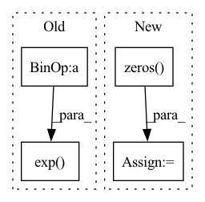

Pattern ID :31251
Before Change
positive_label_mask = targets == 1.0
cross_entropy = F.binary_cross_entropy_with_logits(logits, targets.to(logits.dtype), reduction="none")
neg_logits = -1.0 * logits
modulator = torch.exp( gamma * targets * neg_logits - gamma * torch.log1p(torch.exp(neg_logits)))
loss = modulator * cross_entropy
weighted_loss = torch.where(positive_label_mask, alpha * loss, (1.0 - alpha) * loss)
weighted_loss /= normalizer
return weighted_lossAfter Change
+ (1.0 - targets) * torch.log(1.0 - outputs))
loss = focal_weight * bce
loss = torch.where(torch.ne(targets, -1.0), loss,
torch.zeros( loss.shape, device=device) )
loss /= normalizer
return loss
In pattern: SUPERPATTERN
Frequency: 3
Non-data size: 4
Instances Fragment ID: 91642965
Project Name: sevakon/efficientdet
Commit Name: cc2e5246bcb32e8fd405e64eec12b70088f1f097
Time: 2020-05-25
Author: sevakonyakhin@gmail.com
File Name: utils/tools.py
M Class Name: AnonimousClass
N Class Name: AnonimousClass
M Method Name: focal_loss(5)
N Method Name: focal_loss(5)
M Parent Class:
N Parent Class:
M File Name: utils/tools.py
N File Name: utils/tools.py
M Start Line: 80
M End Line: 87
N Start Line: 74
N End Line: 91
Before Change
def log_prob(self, z):
prob = 0.
for i in range(self.n_modes):
prob += torch.exp(- ((z[:, 0] - 2 * np.sin(2 * np.pi / self.n_modes * i)) ** 2
+ (z[:, 1] - 2 * np.cos(2 * np.pi / self.n_modes * i)) ** 2)
/ (2 * self.scale ** 2)) / (2 * np.pi * self.scale ** 2 * self.n_modes)
return torch.log(prob + 1e-10)
def sample(self, num_samples=1):After Change
self.register_buffer("scale", torch.tensor(2 / 3 * np.sin(np.pi / self.n_modes)))
def log_prob(self, z):
d = torch.zeros( (len(z), 0), dtype=self.z.dtype, device=self.z.device)
for i in range(self.n_modes):
d_ = ((z[:, 0] - 2 * np.sin(2 * np.pi / self.n_modes * i)) ** 2
+ (z[:, 1] - 2 * np.cos(2 * np.pi / self.n_modes * i)) ** 2)\
/ (2 * self.scale ** 2)
d = torch.cat((d, d_), 1)
log_p = - torch.log(2 * np.pi * self.scale ** 2 * self.n_modes) \
- torch.logsumexp(-d, 1)
return log_p Fragment ID: 91642962
Project Name: vincentstimper/normalizing-flows
Commit Name: d9e324c6f8307204350588cc5387c7cff82c8274
Time: 2020-09-22
Author: vincent.stimper@gmail.com
File Name: normflow/distributions.py
M Class Name: CircularGaussianMixture
N Class Name: CircularGaussianMixture
M Method Name: log_prob(2)
N Method Name: log_prob(2)
M Parent Class: nn.Module
N Parent Class: nn.Module
M File Name: normflow/distributions.py
N File Name: normflow/distributions.py
M Start Line: 905
M End Line: 910
N Start Line: 905
N End Line: 913
Before Change
Returns:
Softmax activated (N,k) ndarray (N: no. of samples, k: no. of nodes)
"""
e_x = np.exp( x - np.max(x)) // For stability as it is prone to overflow and underflow
// return e_x / e_x.sum(axis=1, keepdims=True) // only difference
return e_x / e_x.sum(axis=1).reshape((-1, 1)) // Alternative of keepdims=True for Numba compatibility
After Change
// e_x = np.exp(x - max_x)
// return e_x / e_x.sum(axis=1, keepdims=True) // only difference
// Alternative 2
max_x = np.zeros( (x.shape[0],1),dtype=x.dtype)
for i in range(x.shape[0]):
max_x[i,0] = np.max(x[i,:])
e_x = np.exp(x - max_x)
return e_x / e_x.sum(axis=1).reshape((-1, 1)) // Alternative of keepdims=True for Numba compatibility
@njit(cache=True,fastmath=True) Fragment ID: 91642943
Project Name: manassharma07/crysx_nn
Commit Name: c0fedc7df84ead8c1e3f2234f572aa8f25a8e017
Time: 2022-01-14
Author: mikeatthetop@gmail.com
File Name: crysx_nn/activation.py
M Class Name: AnonimousClass
N Class Name: AnonimousClass
M Method Name: Softmax(1)
N Method Name: Softmax(1)
M Parent Class:
N Parent Class:
M File Name: crysx_nn/activation.py
N File Name: crysx_nn/activation.py
M Start Line: 46
M End Line: 46
N Start Line: 53
N End Line: 56